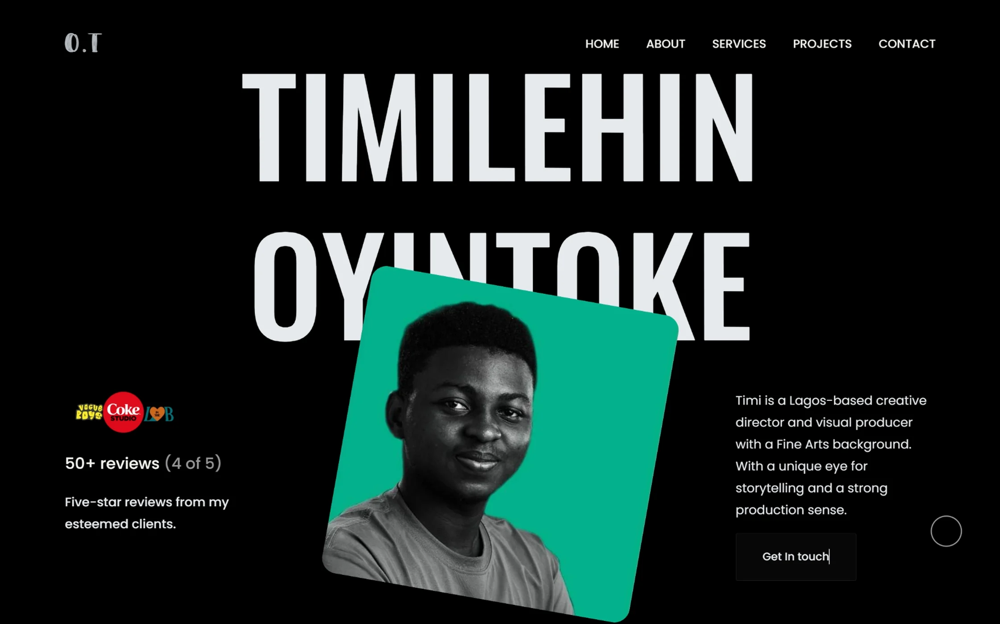
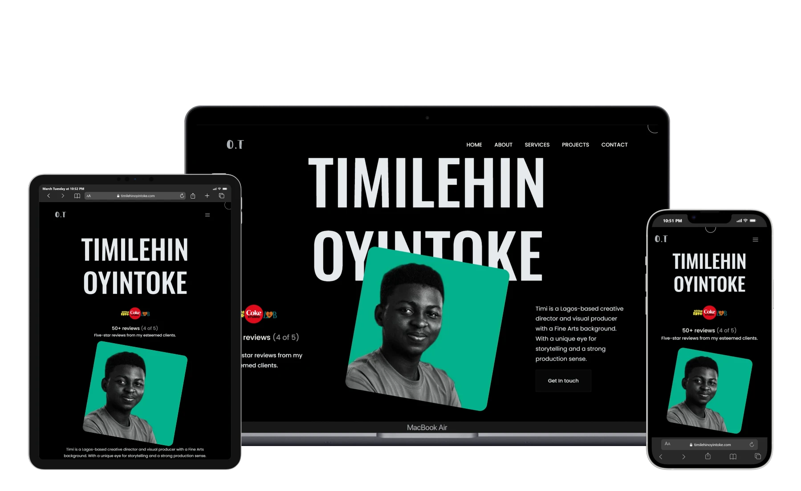

Case Study · Creative Portfolio
Built from scratch to let the visuals lead, this portfolio uses an editorial layout and subtle motion to create an immersive first impression and draw attention to the work.

Overview
This project involved designing and developing a portfolio for a cinematographer and visual creative who needed a strong digital presence. The goal was to create a platform that presents visual work with clarity, atmosphere, and impact.
Challenge & Solution

Process
Defined visual direction and content flow to match the creative identity.
Structured an editorial layout that prioritises imagery and storytelling.
Developed a responsive interface using HTML, CSS, JavaScript, and Bootstrap.
Refined motion to create smooth, unobtrusive transitions.
Impact
The result is a visually driven portfolio that immediately captures attention and allows the work to speak for itself. The layout and motion guide visitors naturally, creating a smooth viewing experience that reinforces the creator’s style and presence.
Tech Stack